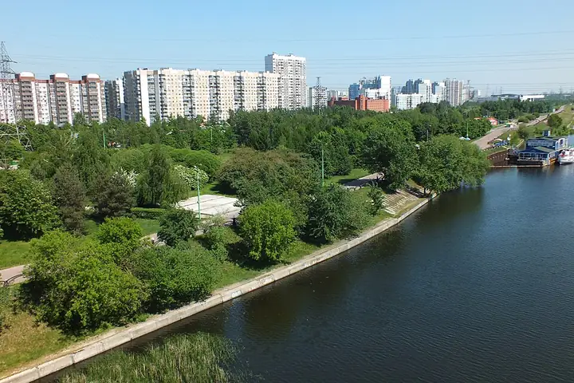

Фото: Brateevsky, CC BY-SA 3.0 · Wikimedia Commons
Парк · ЮВАО
Парк 850-летия Москвы
Большой парк на набережной в Марьине: велодорожки, спортплощадки и вид на Москву-реку.
- ₽ · до 1 500 ₽ на человека
- в 2 планах
Позвать сюда: Парк 850-летия МосквыОткрыть в каталоге: Парк 850-летия МосквыМаршрут до места: Парк 850-летия Москвы
Адрес и детали
- Адрес
- ул. Перерва, Марьино
Открыть на Яндекс Картах (в новой вкладке) - Метро
- м. Марьино
- Округ
- Юго-Восток (ЮВАО)
- Цена
- до 1 500 ₽ на человека
- Проверено
- работает — проверили в октябре 2026
Планы с этим местом 2
- Парк 850-летия Москвы · Парк · м. Марьино
- 6 минут пешкомЧеддер · Пивной ресторан
Пройтись по набережной Парка 850-летия Москвы, а потом в «Чеддер»: пиво и сидр в фирменных бокалах, бургеры и трансляции — бармены расскажут про каждый сорт.
Открыть план: Набережная в Марьине и сидрПозвать сюда: Набережная в Марьине и сидр
Фото: Brateevsky, CC BY-SA 3.0 · Wikimedia Commons
- Парк 850-летия Москвы · Парк · м. Марьино
Велодорожки и набережная Москвы-реки в Парке 850-летия Москвы.
Открыть план: Велопрогулка в МарьинеПозвать сюда: Велопрогулка в Марьине
Фото: Brateevsky, CC BY-SA 3.0 · Wikimedia Commons

Похожие рядом
Что ещё рядом
Как позвать
- Выбери план, место или событие — в карточке адрес, цены и маршрут в Яндекс Картах.
- Нажми «Позвать сюда» — соберётся приглашение-игра для свидания или голосование для компании.
- Отправь ссылку в любой мессенджер: тебе ответят, а компания отметит, куда и когда может. Бесплатно и без регистрации.